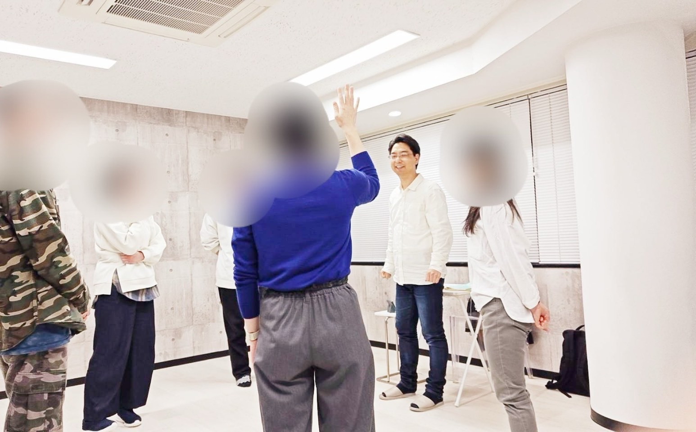
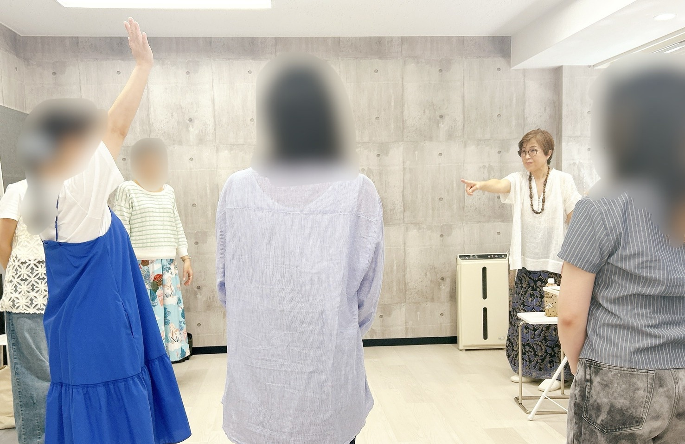
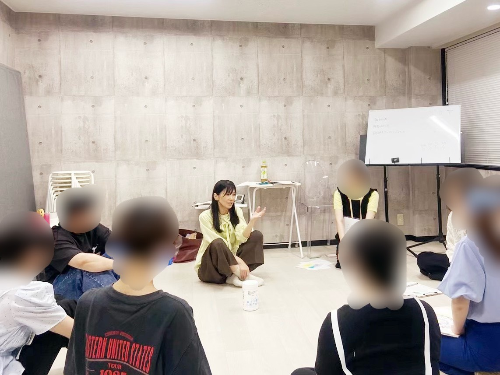
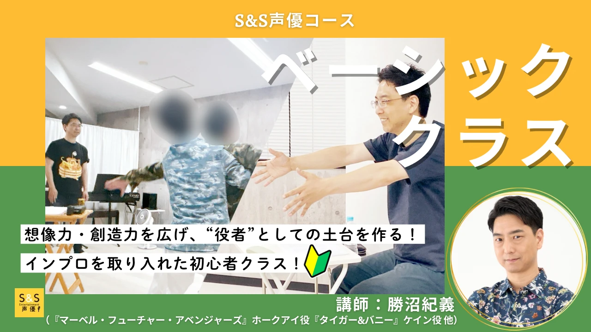
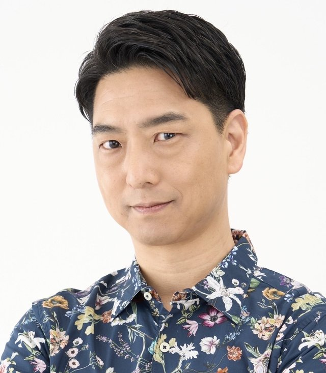
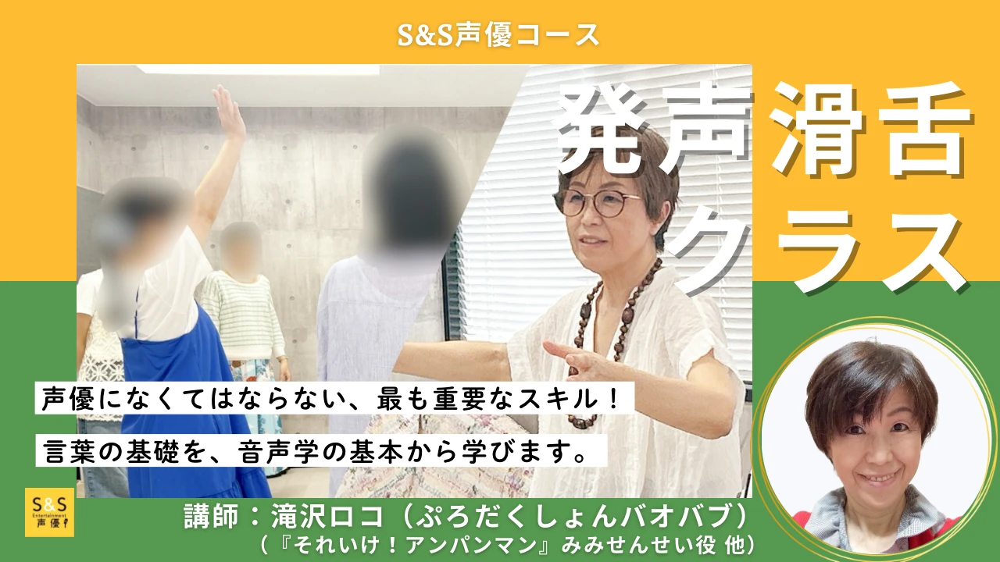
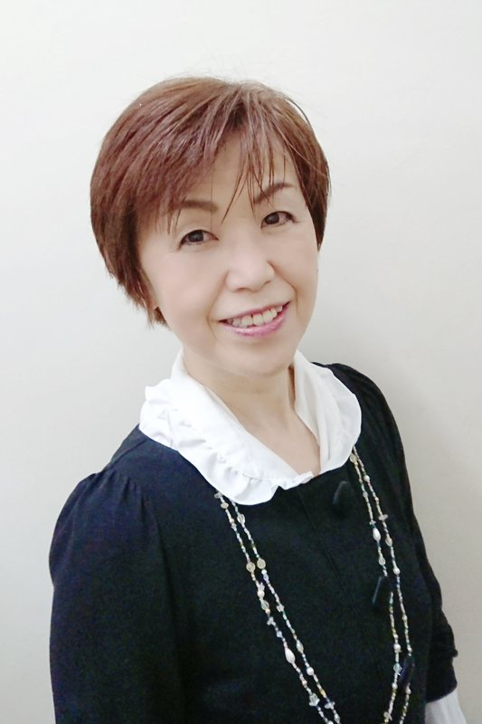
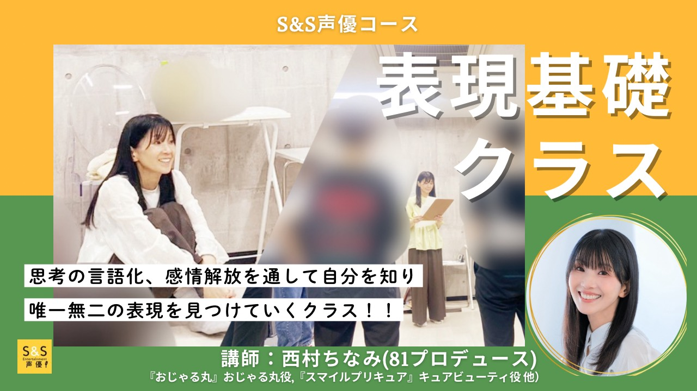
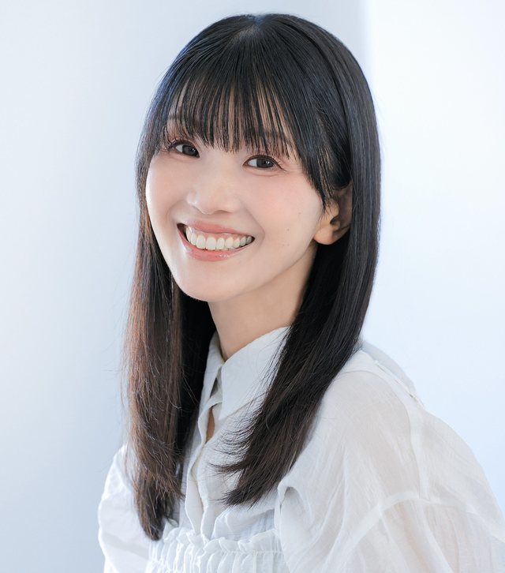

S&S 声優コース
VOICE ACTOR / FOUNDATION
基礎は、
ひとつじゃない。
演技と身体。声と言葉。自分と表現。
- 演技と身体の基礎
- 声と言葉の基礎
- 自分と表現の基礎



3クラス早見表
| 項目 | ベーシック | 発声・滑舌 | 表現基礎 |
|---|---|---|---|
| 鍛えるもの | 演技・身体 | 声・言葉 | 自分・表現 |
| 講師 | 勝沼紀義 | 滝沢ロコ | 西村ちなみ |
| 曜日・時間 | 火曜 19:00〜21:00 | 土曜 14:00〜16:00 | 土曜 18:00〜20:00 |
| 回数 | 月2回・全12回 | 月2回・全12回 | 月2回・全8回 |
| 状態 | 1月26日 新クール開講 | 満席・見学のみ | 12月12日 新規開講 |

演技と身体の基礎
ベーシッククラス
講師：勝沼紀義
声優、役者にとって必要なことを知る・体感する。
ベーシッククラスは、声優・俳優としての土台となる「基礎」を一から学ぶクラスです。
「声優になりたい！」「でも何から始めたらいいかわからない！」「とりあえずアニメに口パクを合わせて喋ってみようかな？」――そんな気持ちから一歩踏み出そうとしている方に向けて、このクラスでは“声優として必要なこと”を根本から体感していきます。
多くの人が最初に思い浮かべるのは「声の演技」かもしれません。けれど、いきなりキャラクターボイスを演じたり、台詞を映像に合わせて喋ったりする前に、まずは「役者」としての基礎を知ることが大切です。このクラスでは、声優である前に“表現者”として何が必要なのか、何を大事にすべきかを体験を通して学び、確かな基礎力を育てていきます。
声優・俳優としての第一歩は、技術よりも「感じる力」。相手の声、空気の流れ、自分の心の動きを丁寧に受け取り、そこから生まれる“リアルな反応”を大切にしていきます。
このクラスでは、考えるよりもまず“体で体感する”ことを重視します。様々なワークを通して、コミュニケーション力や瞬発力、柔軟な思考を育てていきます。シアターゲームや即興的なエクササイズでは、「失敗を恐れずに試してみる」「相手をよく観る」「その場で反応する」――そんな表現者としてのベースを、楽しく体験的に学んでいきます。
即興的なやりとり（インプロ）を通して、「どう喋るか」より前に「どう感じて、どう動くか」を探っていきます。その瞬間に生まれる感情や反応を大切にし、リアルな表現へとつなげる力を身につけていきます。
さらに、台本を使った実践的なワークにも取り組みます。滑舌を意識した台本を使って言葉を明確に伝える練習をしたり、相手との関係性（ステイタス）を意識しながら演じることで、会話の中にある“力のバランス”や“空気の変化”を体で感じ取っていきます。体感した感覚を台本の中でどう活かすか――その橋渡しをしていくステップです。
カリキュラム
日程・募集情報
- 新クール：2027年1月26日（火）スタート、全12回（月2回／火曜／19:00〜21:00）
- ※各月のレッスンは、前々月上旬に確定・お知らせしております。
- 前クールのレッスン日 12月22日（火）・12月29日（火）・1月12日（火）は、見学・体験が可能です。新クール開始前から、先取りで受講を始めることもできます。
費用
レッスン料 62,700円（税込）／設備費 5,000円／分割払い可 10,450円×6回
受講条件
15才以上の健康な男女（経験の有無は問いません）
定員
13名（定員に達し次第締切・先着順）
お申込み時は、フォームで「ベーシッククラス」にチェックを入れてください。
講師紹介

勝沼紀義
プロフィール
岐阜県出身。RME、ケッケコーポレーションなどを経て、現在フリーで活動中。アニメーション、洋画、海外ドラマ、ゲームなど様々な作品に出演する他、ナレーションや自身の主宰するインプロチームでの活動、専門学校や養成所の講師など多岐に渡り活動している。
主な出演作品
- アニメ
- 『マーベル フューチャー・アベンジャーズ』ホークアイ役、『タイガー＆バニー』ケイン役、『フューチャーカードバディファイトDDD』デビル・D・ビッグマシーン役、『マギ』ゴルタス役、『めだかボックス アブノーマル』都城王土役、『ヨルムンガンド』ウゴ役、『棺姫のチャイカ AVENGING BATTLE』ダヴィード役、他多数
- 外画
- 『ドクターハウス シリーズ』フォアマン役、『NCISネイビー犯罪捜査班』レヴィン役、『ハノーバー高校 落書き事件簿/AMERICAN VANDAL』ディラン・マクスウェル役、『アレキサンダー』ダレイオス王役、『アメイジング・スパイダーマン』ニッキー、他多数
- ゲーム
- 『龍が如く7 光と闇の行方』蟹江役、『Marvel's Spider-Man』ショッカー役、『THE KING OF FIGHTERS XIV』ラモン役、『D×2 真・女神転生 リベレーション』レフティ役、『I／O』宮田捜査官役、他多数
- ナレーション
- NHK BS世界のドキュメンタリー、NHK Eテレ高校講座『体を動かすTV』、富士急ハイランドTVCM、『ポケモンバトリオ』TVCM、『マジック・ザ・ギャザリング』TVCM、ENEOSラジオCM、イエローハットラジオCM、他多数

声と言葉の基礎
発声・滑舌クラス
講師：滝沢ロコ
正確でクリアな発音は、声優の基礎中の基礎。
声優としてデビューするためには、正確でクリアな発音が不可欠！滑舌がクリアでないと、確実に声優にはなれません！初心者はもちろん、経験者の方でも滑舌が要因で躓いている方も多くいらっしゃるのが現実です。
このクラスは、声優・俳優にとっての基礎中の基礎である滑舌や発声について集中的にトレーニングするクラスです。
ベテラン声優による滑舌強化トレーニング
講師は『それいけ！アンパンマン』のみみせんせい役など、多くのアニメ・吹替えで活躍する実力派声優で俳優の滝沢ロコ氏。確実に通用する滑舌トレーニングを中心に、声優・俳優に重要な土台となる基礎力を徹底指導します！
こんな方におすすめ！
- 声優としてもっとレベルアップしたい方
- 基礎を鍛えたい方、鍛え直したい方
- 表現力を底上げしたい方
自分の弱点を明らかにし、苦手を克服する確実な指導を受け、プロの現場で通用する「クリアな声」を手に入れ演技や表現力を更にレベルアップしていきましょう！
カリキュラム
日程・募集情報
- 月2回／土曜日／14:00〜16:00、全12回
- 現在満席のため、受講のお申込みは受け付けておりません。見学のみ可能です。
- 見学可能日（いずれも土曜14:00〜16:00）：12月19日、12月26日、1月16日、1月30日、2月13日、2月27日、3月13日、3月27日
費用
レッスン料 62,700円（税込）／設備費 10,000円／分割払い可 10,450円×6回
受講条件
声優・俳優を目指している方／発声・滑舌を鍛えたい方／演技の基礎を学びたい方 のいずれかに該当する15才以上の心身ともに健康な男女（経験は不問です）
定員
12名
お申込み時は、フォームで「発声・滑舌クラス」にチェックを入れてください。
講師紹介

滝沢ロコ
プロフィール
声優、舞台俳優、シンガー、演出家。東京都新宿区出身。劇団東京芸術座に入団後、声優としても活動を始め、ぷろだくしょんバオバブに所属。海外ドラマシリーズ全盛期に多くの日本語版作品に出演。またアニメやゲーム作品にも多数出演している。劇場映画日本語版「アバター」モアト役、「ジョーカー」ペニー役、PS「スパイダーマン」リオ・モラレス役等出演。舞台ではミュージカル「ロミオとジュリエット」、「HOKUSAI ラプソディア」、朗読劇「diary」など多数。また、愛と平和を語り継ぐ「ロコ企画」を主宰し、毎年、戦争を語り継ぐ作品を各地で上演。劇団、プロダクション等で講師として後進の指導にもあたっている。
出演作
- アニメ
- 『それいけ！アンパンマン』みみせんせい、『スヌーピーとチャーリー』ルーシー、『うる星やつら』しのぶの母、『スワン・プリンセスのクリスマス』ブリジット、『トムとジェリーショー』ビーティ、『スター・ウォーズ/クローン・ウォーズ』ペッピ・バウ、『ザ・シンプソンズ』リンダ・ロンシュタット、『デリシャスパーティ♡プリキュア』松山咲枝、『忍たま乱太郎』おりん婆さん 他、『100％パスカル先生』ウェンディーヌ、他多数
- 吹替え
- 『ジョーカー』ペニー・フレック、『アバター』モアト、『ホーンテッド・マンション』エマ、『13日の金曜日/ジェイソンの命日』ダイアナ・ギンブル、『サウンド・オブ・ミュージック』シスター・マルガリータ（歌唱含む）、『ブラックリスト』ミスター・キャプラン、『アリス・イン・ワンダーランド』ヤマネ、『ハイ・ライフ』ルース、『ER緊急救命室』シリーズ（他）、『特捜刑事マイアミ・バイス』シリーズ ダコタ、他多数
- ゲーム
- 『スパイダーマン マイルズ・モラレス』リオ・モラレス、『キングダム ハーツII』チップ、『テイルズ・オブ・リバース』ポプラおばさん、『ホーンテッドマンション』オールドレディ/女王、『デストロイ・オール・ヒューマンズ』クラビス夫人／モンロー、他多数
- その他
- TOKYO MX ミュージック・モア 解説放送、ボイスオーバー 世界のドキュメンタリー パレスチナの母／美貌のスパイ マタハリ、ロコ企画 想い出のサダコ 演出・語り、ロコ企画 フクシマ/希望の木/おこりじぞう 演出・語り、ロコ企画 忘れ得ぬ 形見 演出・語り、他

自分と表現の基礎
表現基礎クラス
講師：西村ちなみ
自分を知り、唯一無二の表現を見つける！
声優として長く第一線で活躍し続けるために、そして、唯一無二の声優になっていくために、「個性」や「強み」を自分の中から見つけていく。
自分らしさを演技にプラスしていけるよう、土台となる「自分」と向き合いながら、掛け合いや、感情開放などの表現の基礎トレーニングを丁寧に行います。
また、今のクセや伸び悩みの原因などにもアプローチしながら、よりあなたらしい表現を見つけ、育てていくクラスです。
カリキュラム
日程・募集情報
- 月2回／土曜日／18:00〜20:00、全8回
- レッスン日程：①12月12日（土）②12月26日（土）③1月9日（土）④1月23日（土）
- ※各月のレッスンは、前々月上旬に確定・お知らせしております。
費用
レッスン料 41,800円（税込）／設備費 5,000円／分割払い可 10,450円×4回
受講条件
声優を目指している方／レッスン歴1年以上／声優事務所に所属している場合は、預かりレベルまでの方 のいずれかに該当する15歳以上の心身ともに健康な男女（上記の条件外でも、熱意のある方はお気軽にご相談ください）
定員
12名（定員に達し次第締切・先着順）
お申込み時は、フォームで「表現基礎クラス」にチェックを入れてください。
講師紹介

西村ちなみ81プロデュース
プロフィール
千葉県出身。94年『超くせになりそう』白鳥なぎさ役でデビュー。主な出演作は『ゲゲゲの鬼太郎』4期ねこ娘、『ポケットモンスター』シリーズ 初代ジュンサー・ワニノコ他、『おじゃる丸』おじゃる丸・小町、『スマイルプリキュア』青木れいか/キュアビューティ。学校でのキャリア教育や、朗読ユニット「音due.」「おとたまいちご」「みついろ」を立ち上げ、朗読公演をライフワークとして活動中。
出演作
- アニメ
- 『超くせになりそう』白鳥なぎさ、『爆走兄弟レッツ&ゴー！！』佐上ジュン、『魔法騎士レイアース』アスカ、『ゲゲゲの鬼太郎』4期ねこ娘、『ハーメルンのヴァイオリン弾き』コルネット、『ポケットモンスター』シリーズ 初代ジュンサー・ワニノコ・アチャモ・パチリス・ニャビー、『ゲートキーパーズ』フェイ、『ちっちゃな雪使いシュガー』グレタ、『円盤皇女ワるきゅーレ』ハイドラ、『おじゃる丸』おじゃる丸、小町、『カレイドスター』ミア、『AIR』神奈備命、『ARIA』シリーズ アリア社長、『金色のガッシュベル』ココ、『BLEACH』虎徹清音、『ケロロ軍曹』月神散世、『スマイルプリキュア』青木れいか/キュアビューティ、『デュエル・マスターズチャージ』不亜幽、『たまゆら』シリーズ 下上山むつ子、『僕の心のヤバイやつ』京太郎の母 他多数
- 外画
- 『スパイ・キッズ』カルメン・コルテス、『IT』トム、『チャイニーズ・オデッセイ』ジンジン、『ボディ・ターゲット』ブリー、『グリーン・ディスティニー』メイ、『レプリカント』ダニー、『スランバーランド』ミズ・アリア、『ER緊急救命室』キャロリン、『アボンリーへの道』イジー、『ウィッシュボーン』サマンサ、『パワーパフガールズ』プリンセス、『パウパトロール』ドクタータルボット 他多数
- ゲーム
- 『ヒロイン ドリーム』舞木静＜主役＞、『トゥルーラブストーリー』みさき、『AIR』神奈備命、『悠久幻想曲2』ヘキサ、『プリンセス・メーカー』少女<主役>、『イリスのアトリエ エターナルマナ』リイタ・ブランシモン、『ヴァリアブル・ジオ2』御剣珠緒＜主役＞、『ドラゴンクエスト10』ワグミカ 他多数
- ナレーション
- NHK『真夜中の王国』『健康こどもっち』『旅するためのフランス語』『趣味どきっ』『グレーテルのかまど』『道長さんぽ〜光る君へ〜』、TBS『知ってニャるほど！ヘルシスト』 他多数
見学・体験の案内
-
ベーシッククラス
見学・体験が可能（前クールの12月22日・29日・1月12日）
-
発声・滑舌クラス
見学のみ可能（見学可能日はクラス詳細に記載）
-
表現基礎クラス
見学・体験が可能
見学・体験・受講のお申込みは、フォーム（該当クラスにチェック）から。
ご相談は、公式LINEでお気軽にどうぞ。
公式LINEで相談するお申込みの流れ
- 1
フォームからお申込み
送信完了メールが届きます
- 2
担当スタッフよりご連絡
3日以内に、面談の日程を決定します
- 3
面談
- 4
受講開始